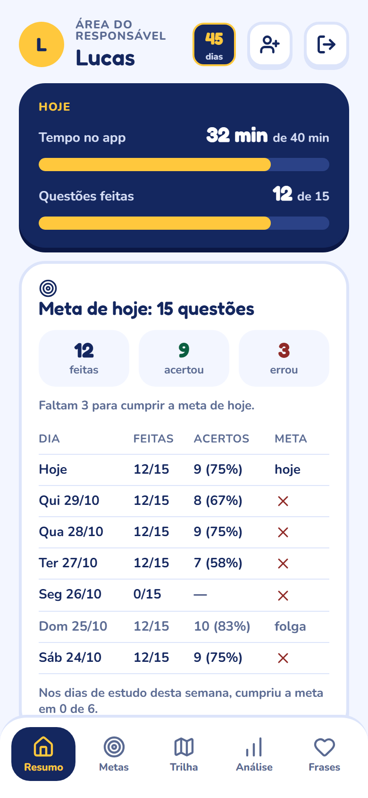
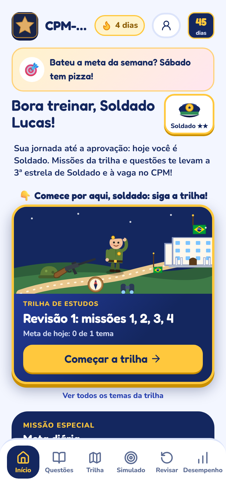
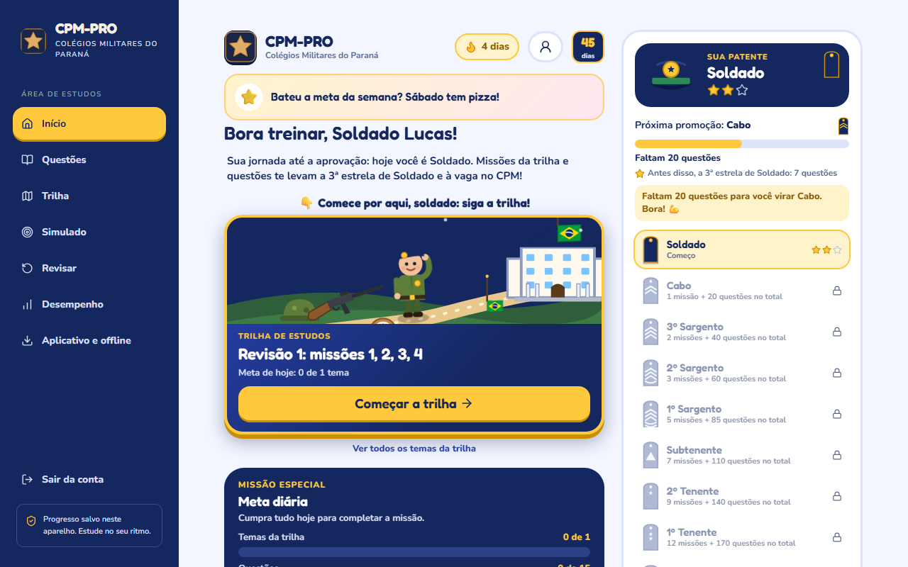
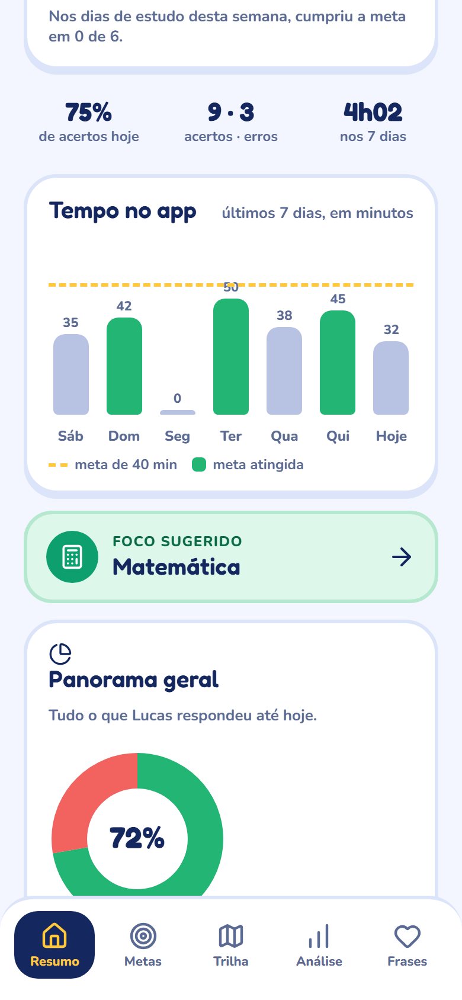
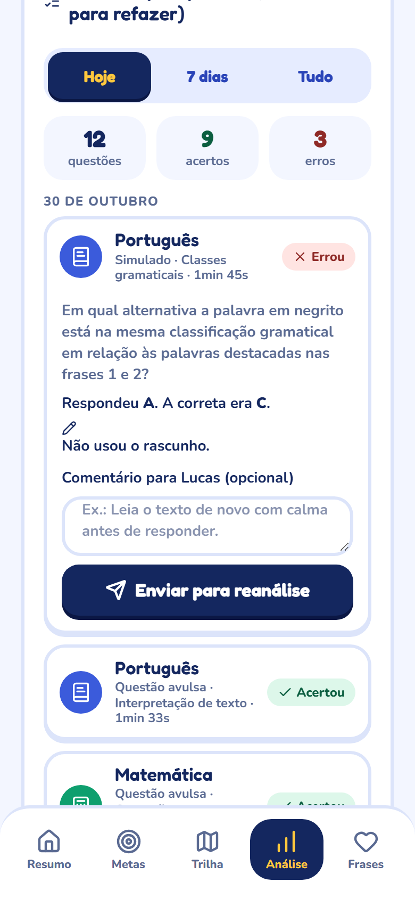
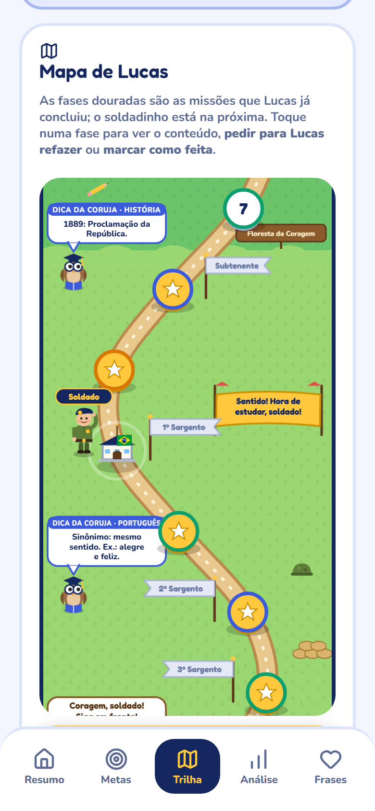
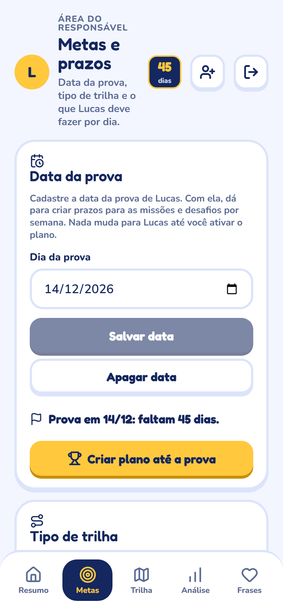
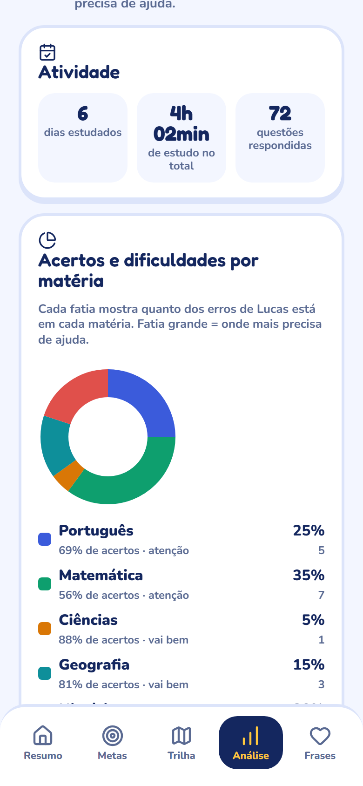

Ele estudou mesmo?
Você chega do trabalho e não sabe se ele estudou, por quanto tempo nem o quê.
Seu filho estuda no celular dele ou no computador, com missões, patentes e questões reais de provas anteriores. Você lança as metas e vê, do seu celular, quanto tempo ele estudou, o que respondeu e onde precisa de ajuda.


Você chega do trabalho e não sabe se ele estudou, por quanto tempo nem o quê.
Apostilas, vídeos e listas soltas. Ninguém diz o que cai na prova nem em que ordem estudar.
Sem acompanhamento, você só descobre se ele estava pronto no dia do resultado.
O CPM-PRO resolve os três: o caminho já vem pronto, a criança estuda sozinha e com vontade e você vê tudo em tempo real.
Seu filho pode usar o celular dele, o tablet ou o computador de casa. É a mesma conta: o progresso vai junto de um aparelho para o outro e chega para você na hora.

Abra no seu celular a qualquer hora do dia. Sem precisar perguntar, sem precisar conferir caderno.




Chega de “já estudou hoje?”. As metas aparecem para a criança como a Missão Especial do dia, e você vê se foram cumpridas.
Cadastre a data da prova e o app recomenda o tipo de trilha. Dá para trocar depois sem perder nada.
Sem planilha e sem ser professor. Os gráficos mostram, em linguagem simples, em que matéria estão os erros e o que fazer.

Escreva frases de incentivo na área dos pais. Elas aparecem para ele no Início e no meio dos exercícios: “Orgulho de você, soldado!”, “Bateu a meta da semana? Sábado tem pizza!”.
E quando ele errar uma questão, você comenta e manda de volta para ele tentar de novo.
Feito para 10 e 11 anos. O conteúdo da prova vira um mapa com 31 missões, alternando as matérias. A cada missão, o soldadinho avança rumo ao Colégio PM.

Cada patente pede missões e questões respondidas. A cada promoção, festa no colégio, com fogos e a tropa comemorando.
Quase 250 questões das provas de 2018/19 a 2025/26, com gabarito e explicação de cada alternativa.
Oito cadernos do 6º ano com as páginas originais, para fazer como simulado.
Português, Matemática, Ciências, Geografia e História, com temas organizados.
A criança risca alternativas e marca dúvida, como no papel. Você vê como ela pensou.
As erradas voltam para refazer, até acertar.
Cada filho com seu acesso; você escolhe quem acompanhar no topo da área dos pais.
Para experimentar com calma.
R$ 39,90 /mês
12 meses de acesso: cobre a preparação inteira.
12× R$ 24,90
ou R$ 298,80 à vista
Preços de lançamento previstos. As assinaturas abrem em breve: entre na lista e avisamos você primeiro.
Sim. O app conta o tempo em que ele está de fato estudando (com a tela aberta e mexendo) e mostra para você o tempo de hoje, o gráfico da semana e o total de horas.
Não. Ele estuda sozinho: o caminho já vem pronto e o app explica cada questão. Só a Batalha Conjunta de cada missão é pensada para fazer junto, com roteiro pronto para você.
Sim. Funciona no celular, no tablet e no computador, com a mesma conta. Abre no navegador e pode ser instalado como app. Funciona até sem internet.
Na área dos pais, em Metas e prazos: questões e minutos por dia, temas da trilha por dia, dias de estudo e a data da prova. Dá para mudar quando quiser.
Para o processo seletivo de ingresso no 6º ano dos Colégios da Polícia Militar do Paraná, nas cinco matérias: Português, Matemática, Ciências, Geografia e História.
Sim. São questões de oito edições anteriores (2018/19 a 2025/26), com gabarito e explicação. A trilha usa primeiro essas questões reais e completa com questões inéditas no mesmo estilo.
Sim. Cada filho tem seu acesso, ligado à sua conta, e você escolhe quem acompanhar no topo da área dos pais.
Guardamos só o nome ou apelido, o e-mail de acesso e o ano da prova. Nada de CPF, foto, telefone ou endereço. Você pode baixar ou apagar tudo quando quiser.
Não. O CPM-PRO é um app independente de preparação para o vestibulinho e não tem ligação com a PMPR nem com os Colégios da Polícia Militar.
Entre na lista e seja avisado quando as assinaturas abrirem.
Lista de espera abrindo em breve.